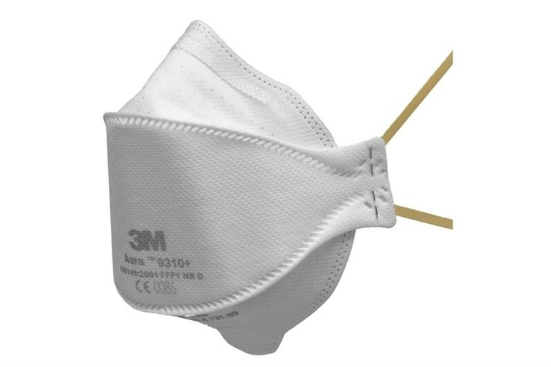

Co dělat během této sitace a jaká udělat opatření?
Co dělat a jak se vyvarovat tomuto viru
prevence
Prevence před nákazou koronavirem SARS-CoV-2 je stejná jako u jiných virových onemocnění, například chřipky: zpřísnění hygienických pravidel, např. mytí rukou, vyhýbání se osobám s respiračními potížemi, vyhýbání se koncentrovanému shromáždění osob či posilování imunitního systému. Pokud jde o přežívání viru na površích, virus má poločas přežívání (doba, po které ho zůstane poloviční množství), u různých materiálů je různý, ale je v řádu hodin. Dle posledních studií se pro dezinfekci zasažených oblastí hodí lépe ozon, který ničí SARS-CoV-2 lépe než chlor. Doporučuje se před viry chránit rouškou, či respirátorem, brýlemi a rukavicemi.
typy respirátorů
| Třída | Filtrační účinnost materiálu | Celková účinnost ochrany | Doporučené použití (podle NPK/PEL) |
|---|---|---|---|
| FFP1  | >80% | >78% | proti netoxickému prachu do koncentrace rovné cca 4 násobku NPK, pro látky, jejichž PEL je větší nebo roven 6 mg/m3 např.: cement, hliník, hnědé uhlí, lignit, magnesit, popílek, prach z umělého brusiva, půdní prachy, saze, škvára, vápenec, mramor, vysokopecní struska, šamot, sisal, vlna, srst, obilný prach, |
| FFP2 | >94% | >92% | proti prachu s převážně dráždivým účinkem do koncentrace rovné cca 10 násobku NPK, pro látky, jejichž PEL je větší nebo roven 0,1 mg/m3 např.: bavlna, len, konopí, hedvábí, syntetická textilní vlákna, peří, mouka, tabák, čaj, káva, koření, pryskyřice, PVC, sklolaminát, dřevo |
| FFP3 | >99% | >98% | proti toxickým částicím, virům, sporám, bakteriím, radioaktivnímu prachu do koncentrace rovné 30 násobku (někdy až 50 násobku) NPK, pro látky, jejichž PEL je větší nebo roven 0,1 mg/m3 |
Jednorázové latexové rukavice
K omezení kontaktu s virem je lepší, například při nákupu používat jednorázové rukavice.